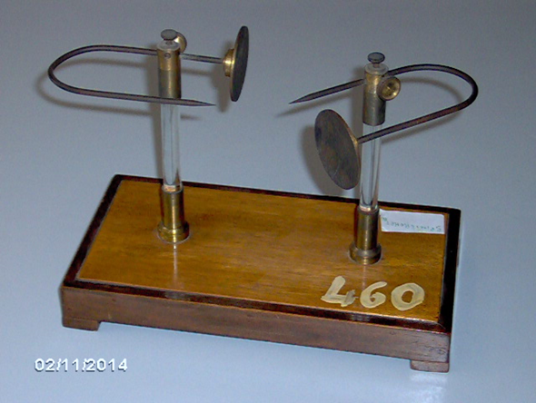

Scaricatore a doppia forcella
Scuola di provenienza: Liceo Classico "P. Colletta", Avellino
Settore: Elettrologia
Costruttori: Sconosciuto
Materiali: Legno, ottone
Accessori: Nessuno
Stato di conservazione: Buono
Descrizione: Questo apparecchio fu progettato sulla scia di un intenso dibattito sulla diversa capacità di dispersione dell'elettricità negativa e positiva nell'aria che, a partire dalla metà degli anni trenta dell'ottocento, si sviluppò soprattutto in Inghilterra, Francia ed Italia. In particolare i fisici Faraday, Peltier e Belli contribuirono con i loro studi ad evidenziare le principali caratteristiche della scarica elettrica prodotta attraverso conduttori appuntiti e sferici. In Italia il fisico Giuseppe Belli (1791-1860) nell'intento di mostrare che l'elettricità negativa, a parità di condizioni, si disperde nell'aria più facilmente di quella positiva, progettò questo semplice dispositivo. Su una base rettangolare di legno due colonne di vetro sostengono uno spinterometro completamente d'ottone i cui bracci, scorrevoli orizzontalmente su scanalature a vite, terminano con una coppia di forcelle affacciate l'una di fronte all'altra, portanti ciascuna una punta e una sfera. Questo permetteva di comparare e studiare, a parità di distanza esplosiva, la scarica tra la punta ed una sfera d'ottone ad essa affacciata, caricate a differenti potenziali.